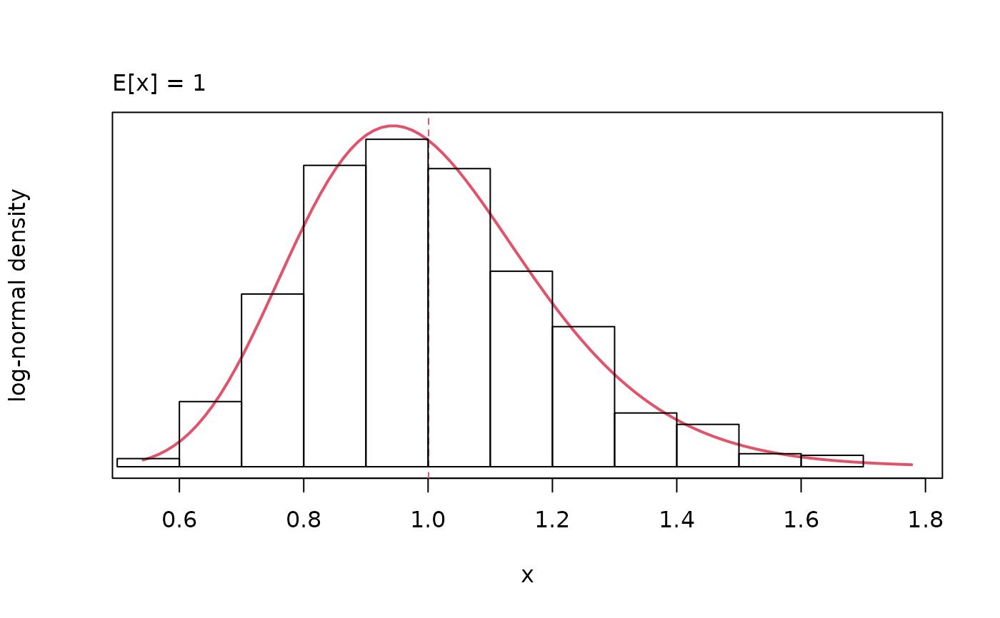

Class containing a probability distribution
Source:R/distribution-class.R, R/distribution.R
distribution-class.RdThis is an S4 object class that includes both a numeric vector for storage of values generated using Monte Carlo methods, and a list of parameters describing the associated parameteric distribution. Only a selection of two-parameter distributions are currently supported.
Usage
# S4 method for class 'distribution,ANY,missing,numeric'
x[i] <- value
distribution(
values = NA_real_,
pars = c(NA_real_, NA_real_),
density = "unspecified",
...
)Arguments
- x
distributionclass object- i
optional index value
- value
numeric value or values to assign
- values
vector of values to be stored in the object. If a
densityargument is also supplied, then parameters for that distribution are estimated from thevaluesusing maximum likelihood.- pars
vector of length two containing parameters for the parametric distribution specified by the
densityargument. Ifparsare provided but nodensitythen this generates a warning.- density
character string specifying the probability density (or mass) function. Can be one of
beta,int-uniform,uniform,normal,lognormal,logitnormalorgamma.- ...
optional
nameoriterarguments
Details
The inputs determine how the distribution object is initialised. If a vector of values are provided these are stored. If a distribution is also provided via the density argument then parameters for this distribution are estimated. Parameters can be provided without values via the combined pars and density arguments. If pars, density and iter are all provided then values are generated internally during initialisation of the object.
Monte Carlo simulation from the distribution object will depend on whether values are present. If present, they are sampled at random (i.e., non-parametrically) regardless of whether the distribution is specified. If values are missing, then parametric sampling is performed. Switching between parametric and non-parametric sampling is possible by adding or removing values.
Slots
.Datanumeric vector of values
parsdistribution parameter values
densityprobability density (or mass) function
nameoptional label
Examples
# create object containing
# vector of values
iter <- 1e3
cv <- 0.2
sd <- sqrt(log(1 + cv^2))
mu <- log(1) - sd^2/2
x <- rlnorm(iter, mu, sd)
y <- distribution(value = x, density = "lognormal")
# show
y
#> distribution object class
#> density: lognormal
#> pars: -0.019, 0.198
#> values: 0.743, 1.031, 0.605, 0.979, 1.109, 1.231, 0.684, 0.934, 0.934, 0.927, 0.879, 1.111, ..., 0.868
#> name: --
#>
# summarise
summary(y)
#> E[log(x)] SD[log(x)] E[x] VAR[x] CV[x]
#> -0.01875 0.19804 1.00086 0.04007 0.20000
# when values are provided
# then sampling is non-parametric
all(sample(y, size = length(y)) %in% x)
#> ! sampling with 'replace = FALSE'
#> [1] TRUE
# create object
# without values
z <- distribution(pars = c(mu, sd), density = "lognormal")
# with no values the
# sampling is parametric
all(sample(z, size = length(y)) %in% x)
#> [1] FALSE
# plotting will show histogram
# if values are present
plot(y)

# object otherwise behaves
# like a numeric vector
# e.g.:
length(y)
#> [1] 1000
mean(y)
#> [1] 1.000825
y[1:10] <- 3
y
#> distribution object class
#> density: lognormal
#> pars: -0.019, 0.198
#> values: 3, 3, 3, 3, 3, 3, 3, 3, 3, 3, 0.879, 1.111, ..., 0.868
#> name: --
#>
# removing values from
# object can be used to
# invoke parametric sampling
y[] <- numeric(0)
y
#> distribution object class
#> density: lognormal
#> pars: -0.019, 0.198
#> values: EMPTY
#> name: --
#>
# if values are provided but no density
# then sampling is always non-parametric
z <- distribution(values = 0:10, density = "unspecified")
sample(z, size = 3)
#> ! sampling with 'replace = FALSE'
#> [1] 1 6 7
# if pars are provided but no density
# then no values can be simulated
z <- distribution(pars = c(mu, sd))
#> ✖ 'pars' provided with no 'density'
z
#> distribution object class
#> density: unspecified
#> pars: -0.02, 0.198
#> values: EMPTY
#> name: --
#>
try(sample(z, size = 3))
#> Error in sample(z, size = 3) : '@density' is unspecified